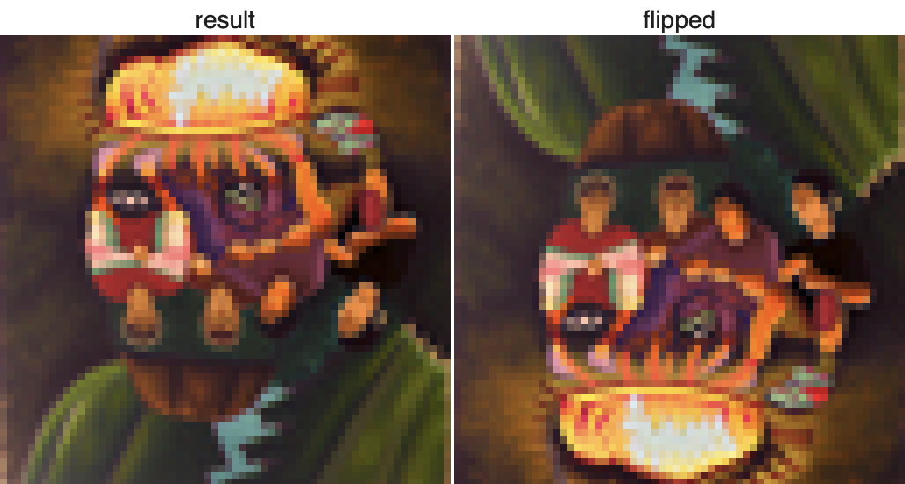

Project 5 - Diffusion Models
Filip Malm-Bägén

Part A - Introduction
This first part of the project goes through image diffusion models amd diffusion sampling loops. The goal is to get used to diffusion models and use them for other tasks such as inpainting and creating optical illusions.
Sampling Loops
Approach
Starting from a clean image, noise was progressively added at each
timestep until reaching pure noise at T = 1000. Using the model, I
reversed this process by predicting and removing noise
step-by-step to reconstruct the original image. Noise levels were
controlled by DeepFloyd’s pre-set coefficients,
alphas_cumprod. The sample image was resized to 64
× 64, scaled to [-1, 1], and prepared as input for the
denoising process.
Results
1.1 - Implementing the forward process
Approach
I implemented the forward process to simulate noise addition to a
clean image at varying levels. Given a clean image
x_0, the forward process generates a noisy image
x_t at timestep t by sampling from a
Gaussian distribution with mean
sqrt(alphas_cumprod[t]) * x_0 and variance
(1 - alphas_cumprod[t]). Using the function
forward, I applied this process to the test image for
noise levels t = 250, 500, and 750,
resulting in progressively noisier images as expected.
Results
1.2 - Classical Denoising
Approach
In this section, I applied classical denoising techniques to the
noisy images from timesteps 250, 500, and 750 using
Gaussian blur filtering. Each noisy image was
processed with
torchvision.transforms.functional.gaussian_blur to
attempt noise reduction. The results were displayed side by side
to compare the effectiveness of Gaussian denoising on each image.
Achieving significant noise reduction proved challenging due to
the limitations of classical filtering methods with high-noise
images.
Results
1.3 - Implementing One Step Denoising
Approach
Here, I used a pretrained UNet, to perform one-step denoising on
noisy images. This UNet was trained on a vast dataset of image
pairs
(x_0, x_t) and can estimate the noise present in a
noisy image x_t when given a specific timestep
t. By estimating the noise, I was able to subtract it
(while applying the necessary scaling, as per equation 2) to
recover an approximation of the original image x_0.
This process was applied to images with noise levels
t = [250, 500, 750], and the results were visualized
side-by-side, showing the original, noisy, and estimated denoised
images.
Results
1.4 - Implementing Iterative Denoising
Approach
Next, I implemented iterative denoising by starting with a noisy
image at t = 990, and I progressively reduced noise
at strided timesteps, which interpolates between signal and noise.
Key parameters like alpha, beta, and
alphas_cumprod were computed at each step, with
variance added via the add_variance function to mimic
training conditions. Intermediate results every 5 steps showed
gradual noise reduction.
Results
1.5 - Diffusion Model Sampling
Approach
A diffusion model was used to generate images from scratch by
denoising pure random noise. The process involved creating random
noise tensors using torch.randn and then denoising
the tensors with the iterative_denoise function. We
applied a prompt embedding for "a high quality photo" to guide the
generation process and repeated this five times to produce unique
images.
Results
1.6 - Classifier Free Guidance
Approach
I used Classifier-Free Guidance (CFG) to enhance image quality by
combining conditional and unconditional noise estimates with a
scaling factor, γ, set to 7. This involved implementing the
iterative_denoise_cfg function, which denoises images
using both a prompt embedding for "a high quality photo" and an
empty prompt embedding for unconditional guidance. The UNet model
was run twice at each timestep to compute the conditional and
unconditional noise estimates, which were then combined using the
CFG formula. I did this five times, to generate images with
significantly improved quality compared to the previous section.
Results
1.7 - Image-to-image Translation
Approach
I used the SDEdit algorithm to refine noisy images back to
natural-looking ones. Starting with the test image, I added noise
and denoised it using the
iterative_denoise_cfg function with starting indices
[1, 3, 5, 7, 10, 20]. The process was guided by the prompt "a high
quality photo" and a CFG scale of 7. I also repeated this on two
other test images to show how the method works for different
inputs.
Results
1.7.1 - Image-to-image Translation
Approach
I experimented with editing non-realistic images, including one
downloaded from the web and two hand-drawn images. Using the
iterative_denoise_cfg function, I applied the same
noise levels ([1, 3, 5, 7, 10, 20]) to project these images onto
the natural image manifold. The preprocessing steps ensured the
input images fit the model's requirements, with resizing and
normalization. Results demonstrate how effectively the algorithm
transforms diverse inputs into photorealistic images.
Results
1.7.2 - Inpainting
Approach
This function uses a binary mask to retain the original image content in unmasked areas while applying iterative denoising to generate new content in masked areas. I created a mask for the Campanile test image and inpainted the top of the tower. Additionally, I edited two custom images using unique masks for creative inpainting tasks. The results demonstrate the ability to seamlessly blend original and generated content.
Results
1.7.3 - Text-Conditioned Image-to-image Translation
Approach
In this step, I used the text prompt "a rocket ship" to guide how an image evolves during denoising. Starting with varying noise levels [1, 3, 5, 7, 10, 20], the process blends the original image with rocket-themed elements. I also applied this to two of my own images, showing how text prompts can creatively transform visuals!
Results
1.7.4 - Visual Anagrams
Approach
The Visual Anagrams technique creates an optical illusion where an image of "an oil painting of an old man" turns into "an oil painting of people around a campfire" when flipped upside down. By denoising the image with two different prompts—one for the original and one for the flipped version—and averaging the noise estimates, we get this effect. Here’s an example where flipping the image reveals a completely different scene.
Results
1.7.4 - Visual Anagrams
Approach
The Visual Anagrams technique creates an optical illusion where an image of "an oil painting of an old man" turns into "an oil painting of people around a campfire" when flipped upside down. By denoising the image with two different prompts—one for the original and one for the flipped version—and averaging the noise estimates, we get this effect. Here’s an example where flipping the image reveals a completely different scene.
Results
This webpage design was partly made using generative AI models.